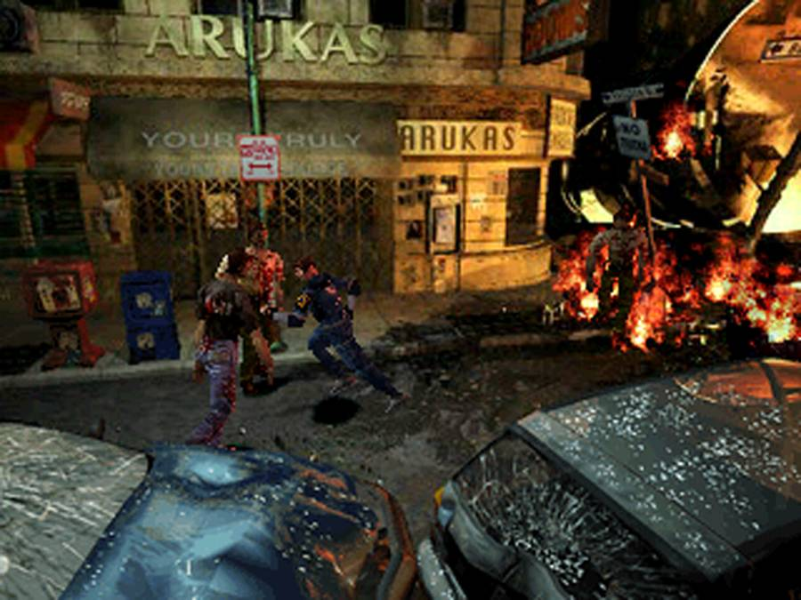
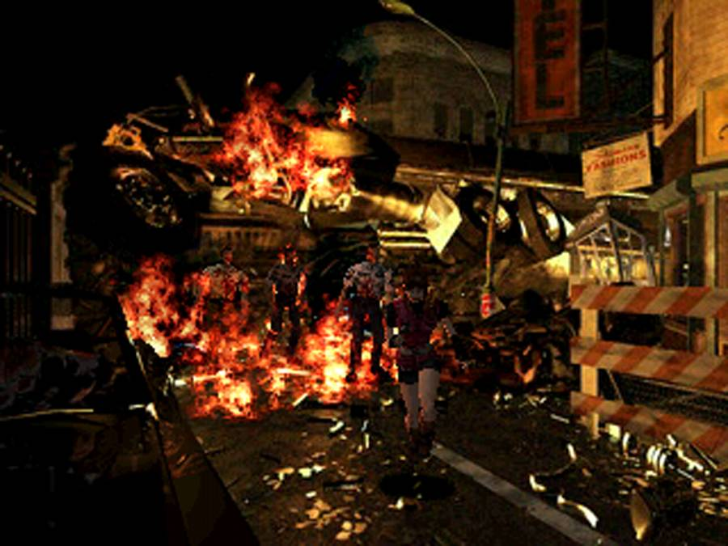
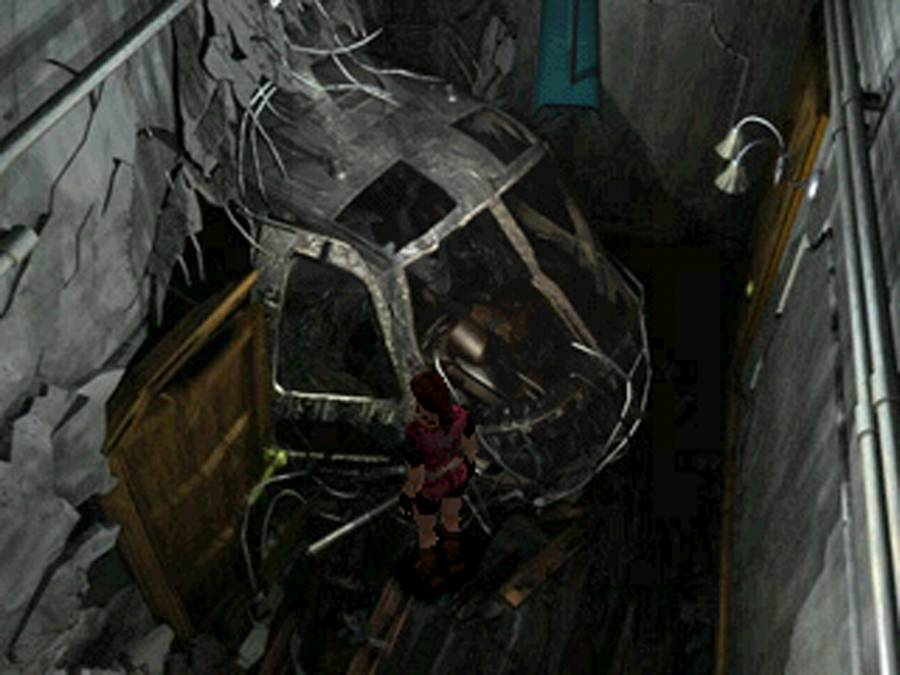
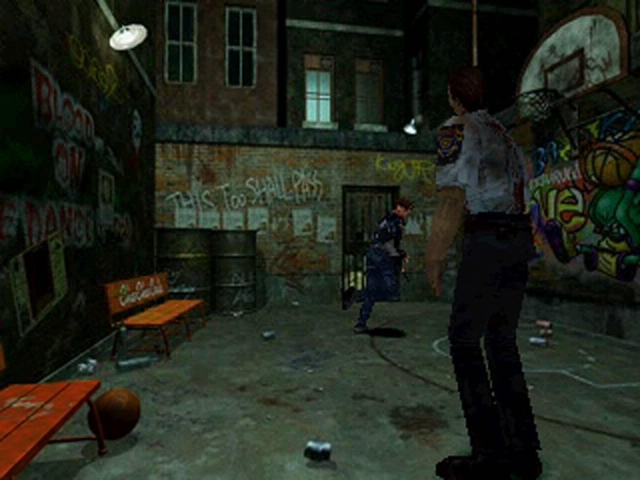

Resident Evil 2
A classic survival horror game set in zombie-infested Raccoon City two months after the original Resident Evil. Play as either Leon S. Kennedy or Claire Redfield through branching storylines as they escape the city and confront William Birkin, creator of the G-virus. Features limited saves and ammunition, fixed camera angles, puzzle-solving, and tense exploration. Widely considered one of the best video games ever made.
.png)
| Platform | Sony PlayStation |
|---|---|
| Genre | Survival Horror |
| Released | |
| Developer | Capcom |
| Publisher | Capcom |
| Available | PS1, N64, DC, GCN, PSN |
Where to Play
About This Game
Resident Evil 2 was released for the PlayStation in 1998 and is one of the most celebrated survival horror games ever made. Directed by a young Hideki Kamiya—who would later create Devil May Cry and Bayonetta—the game famously went through a dramatic development reboot. The original version, now known as "Resident Evil 1.5," was approximately 60–80% complete before Capcom scrapped it, feeling it wasn't a worthy sequel. The team rebuilt the game from scratch with a new protagonist (Leon S. Kennedy replacing a different character named Elza Walker), reworked environments, and a more cinematic presentation.
The gamble paid off spectacularly. RE2 sold over 4.96 million copies on PlayStation alone, making it one of the console's best-selling titles. Its "Zapping System"—where completing the game as one protagonist unlocks a second scenario from a different character's perspective—effectively doubled the content and added genuine replay value. The Raccoon City Police Department remains one of gaming's most iconic settings: a repurposed art museum turned police station, its labyrinthine layout packed with puzzles, secrets, and enough undead to fuel decades of nightmares.
Did You Know?
- The original version of RE2, known as "Resident Evil 1.5," was scrapped when it was 60-80% complete. It featured a completely different female protagonist named Elza Walker (a college student), a more destroyed R.P.D. building, and no interconnected "Zapping System." Capcom felt it wasn't scary enough and rebuilt the game from scratch.
- The N64 port is considered a technical miracle. Angel Studios (later Rockstar San Diego) compressed the entire two-disc PS1 game — including all FMV cutscenes — onto a single 64MB cartridge. It also added exclusive "EX Files" documents that expand the lore and connect to other Resident Evil titles.
- The R.P.D. building's layout is based on a real art museum because, in the game's lore, it literally was one — the Raccoon City government converted a museum into a police station. This explains the building's ornate architecture, statue puzzles, and impractical room layouts.
- Hideki Kamiya directed RE2 at just 25 years old. It was his directorial debut. He would go on to create Devil May Cry (born from a scrapped RE4 prototype), Viewtiful Joe, Okami, and Bayonetta — making him one of gaming's most influential directors.
Critical Reception
Accolades
- #2 Best PlayStation Game of All Time — IGN, 2000
- #31 Greatest Games of All Time — Electronic Gaming Monthly, 2001
- Game of the Year (Console) — GameSpot, 1998
Club Achievements

Beat the Game
GoldOther Participants
No participants yet.
Speedrun Records
Resident Evil 2 has one of the most active speedrunning communities in survival horror. Players exploit precise routing, inventory management, and damage boosts to shatter times on both Leon and Claire scenarios.
Soundtrack
Composed by Masami Ueda, Shusaku Uchiyama & Syun Nishigaki
The RE2 soundtrack masterfully blends ambient dread with sudden orchestral stings. The main hall's save room theme offers brief sanctuary, while the underground laboratory pulses with industrial tension. The score does much of the heavy lifting in making Raccoon City feel genuinely terrifying.
Notable Tracks
- The Beginning of Story
- Save Room (Secure Place)
- R.P.D. Main Hall
- Ada's Theme
- T-103 Pursuit (Mr. X Theme)
- The Last Judgement (Final Boss)
Screenshots




Screenshots via LaunchBox Games Database
If You Liked This

Sources & Attribution
- Game description and historical background adapted from Wikipedia
- Trivia sourced from The Cutting Room Floor, Resident Evil Wiki, and community research
- Review scores from IGN, GameSpot, and Famitsu
- Accolades from IGN, Electronic Gaming Monthly, and GameSpot editorial archives
- Speedrun data from Speedrun.com
- Playtime estimates from HowLongToBeat
- Screenshots and box art via LaunchBox Games Database
- Soundtrack information from KHInsider
- Pricing data from PriceCharting